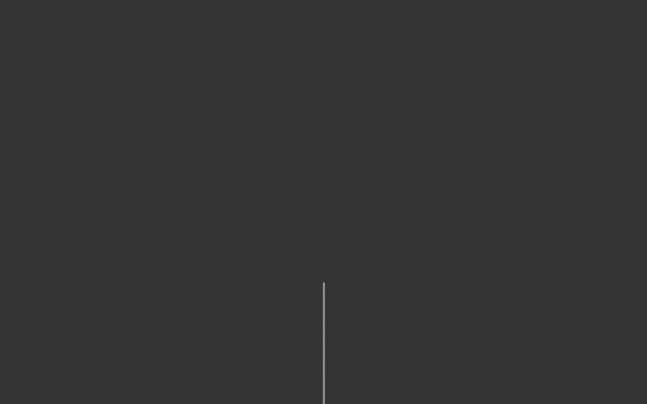

Recursion
Recursion is a method of solving problems that uses functions that call themselves within their own code.
A recursive method has two parts: a base case and a non-base case.
A base case tells the method when to stop recursing, and the non-base case continues the recursion.
The end output is the combination of all the results of each method call that happened.
In order to solve a problem recursively, three criteria must be met:
- The problem must be capable of being broken down into smaller and repetitive elements or sub-problems.
- There must be a recognizable endpoint or base case.
- The problem must be able to be solved from the solutions of the smaller sub-problems.
There are many benefits to recursion, including shorter and simpler solutions to problems. However, because recursion calls an entire function repeatedly, it takes up more space in memory. Each method call adds to memory and the overall time taken to complete the recursion. Learn More
Linear Recursion
Linear Recursion, or just recursion, is the most basic of recursion variants. It is a singular method that calls itself continuously until the program reaches the base case. An example of a simple recursive method is a factorial.
public static int factorial(int n) {
//base case
if(n == 1)
return n;
//non-base case
return n*factorial(n-1);
}
The program calculates the factorial by calling the method repeatedly with decreasing values.
The method calls look like this:
factorial(4)
4 * factorial(3)
4 * 3 * factorial(2)
4 * 3 * 2 * factorial(1)
4 * 3 * 2 * 1
4 * 3 * 2
4 * 6
24
However, it may be difficult to understand recursion right away just by looking at text. Below is a visual representation of a simple recursive function, as well as its pseudocode.
For the sake of a visually pleasing image, this example uses tree recursion. However, the concept is the exact same as linear recursion. The only difference is that the method calls itself multiple times per method in tree recursion whereas in linear recursion the method calls itself once per method.
function branch(len)
drawLine from 0, 0 to 0, -len
If len is greater than 50 Then
translate by 0 and -len
rotate 36 degrees
branch(len*0.67) #right branch
rotate -72 degrees
branch(len*0.67) #left branch
In this case, since the method is not returning anything, the base case is simply not calling the non-base case. As we can see, the function will draw a branch, then add two smaller branches to the end of the current branch. Those smaller branches will add two smaller branches to themselves, and this will repeat until the length of the branch is less than 50. The translate and rotation simply moves the branch to the end of the previous branch. This type of visual recursion can be expanded to create a fractal tree, the code for which can be found in here.
Tail Recursion
Tail recursion is a form of recursion where the recursive call is the last thing executed by the function. The idea behind tail recursion is that since the recursive call is the last statement, there is nothing left to do in the current function, so it is unnecessary to save the current stack to memory. Since it doesn't have to save anything, it is more efficient. It is possible to rewrite the linear recursive factorial method as a tail recursive method.
public static int factorial(int n) {
return factorialTail(n-1, 1);
}
public static int factorialTail(int n, int a) {
if(n == 0)
return a;
return factorialTail(n-1, n*a);
}
So what is different? Notice that in the linear recursion method,
the recursive call is n*factorial(n-1) whereas the recursive call is factorialTail(n-1, a) in the tail recursion.
In the linear recursion method, the stack must be saved to memory, as it still has to perform n* on the returned value.
However, in the tail recursion method, n* is instead stored in variable a,
which stores the total product of all the previous multiplicands.
Therefore the stack no longer has to be saved to memory.
Mutual Recursion
Mutual recursion is a form of recursion where there are multiple methods that call eachother. One method calls the other, which then calls the first. This continues until the base case is reached. At least one of the methods must have the base case. A simple, but inefficient example of mutual recursion is to use two methods to determine if a number is even or odd.
public static boolean even(int n) {
if(n == 0)
return true;
return odd(n-1);
}
public static boolean odd(int n) {
if(n == 0)
return false;
return even(n-1);
}
The idea behind this is to toss the decreasing value back and forth between the two methods.
Since the methods alternate, any odd number would finish in the odd(n) method, and any even number would finish in even(n).
The user would call the even(n) method to check if the number is even.
It will return true if it is even, and false if it's not.